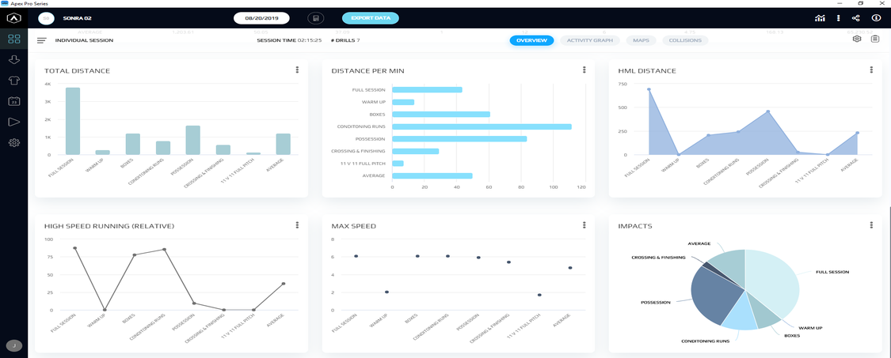
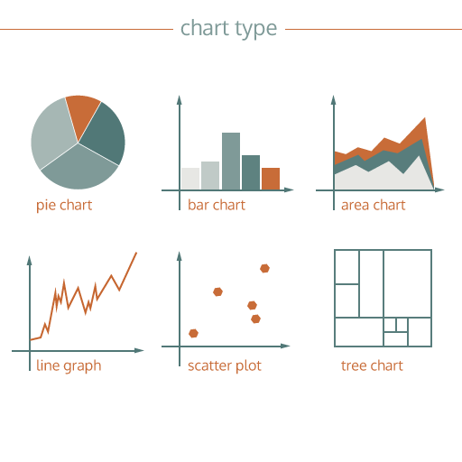

Introduction
In this blog post, I will be talking about Data Visualisation, the importance of Data visualisation, along with the different forms of visualising data. DATA VISUALISATION DEFINITION Qi uses many articles and scholars to figure out the definition of Data Visualisation. Through combining and narrowing down the given definitions, I was able to conclude that Data Visualisation is when data is represented in a pictorial or graphic setting. Data Visualisation is the action of combining and predicting patterns throughout the years and reintroducing them in a visually pleasing format. As opposed to the scripted way of consuming data, data is now represented through visually acceptable formats like bar graphs, Pie Charts, scatter plots, and many other ways. Data has since expanded on the forms it has to be visually represented which is thanks to the advancement of technology. Compared to a few hundred years ago, we now have multiple digital formats that can be use to further simplify data while simultaneously making it easier for the vast majority to consume. Although Data varies, it is now extremely close to being accurate if we take into account the ever-changing flow of new information, especially on the world wide web.
DATA AND INFORMATION
We as people ad surfers of the web, consume vast amounts of data daily. This is a large quantity of information that has to be filtered in order to be able to represent itself as either factual or interesting. Qi states that there are 2 types of data, primary and Secondary data. Primary data is described to be the first contact data (Li, 2020). This is information collected from the source that is then later processed into actual data. It takes a more individualistic approach by combining the answer of questions proposed through research and creating a statistic that can somewhat accurately represent the data. Secondary data is using previously established information or data, and repurposing it to include more data or to reshape it into consumable data. An example I came up with was anime and manga. The manga is seen as a primary source of the creator’s original thought and ideas of how the story is meant to be told, whereas the anime adaptation of that manga has taken what information there was in order to turn it into a medium that some could consider easier to consume.
TRADITIONAL FORMS OF VISUAL DATA
There are a number of traditional ways in which data is visualised. We have Scatter Plots, Tables, graphs, diagrams and graphs. Each have their own unique fixtures that make them important and relevant in terms of daily use. The most common I have seen is the Scatter graph. This is mostly used on social media platforms to indicate data about the different users across the world. An example would be the most searched topics on Reddit and which regions they are from. We used bar graphs in high school, specifically in science related subjects in order to determine the hypothesis of a subject. With each form of visualisation, there is a field that uses it in order to get accurate data, that can garner factual results.
REFERENCING
Li, Q. and Li, Q., 2020. Data-Based Digital Art Practice. Embodying Data: Chinese Aesthetics, Interactive Visualization and Gaming Technologies, pp.73-86.